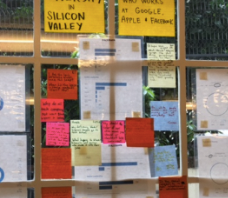
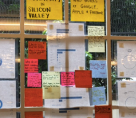

STEAM Workshops Leader
East Bay School for Boys, Fremont Main Library
Fall 2016, Spring 2017

Purpose
Something I wanted to encourage within the community I grew up within was the notion that art and science don't have to exist in a dichotomy. There are so many ways to strike synergy between the two domains, and I wanted to give back during my sophomore year.
This was how I began a series of workshops which taught kids anywhere from five to seventeen the beauty of: generating fractals as art, coding optical illusions, building a minimalist Mario game, web animation
Process
In high school, I had volunteered for a program called Science for Youth at my local library. In college, I reached out to the same coordinators and asked if I could volunteer again and hold free workshops revolving around creative computing.
What began at Fremont Main Library eventually carried over to a few workshops at East Bay School for Boys, a school neighboring Berkeley that I had conducted field work at during Spring 2017.


 


Reflection
Each workshop lasted a hectic 1.5 hours, during which I juggled teaching and helping kids debug. However, there really is nothing more amazing than hearing a student exclaim to their parent, "That was amazing!" My efforts in teaching creative computing helped students discover a little more about their world and realize that they each have the innate ability to craft it as well.
You can see some of my presentations here (Mario) and here .